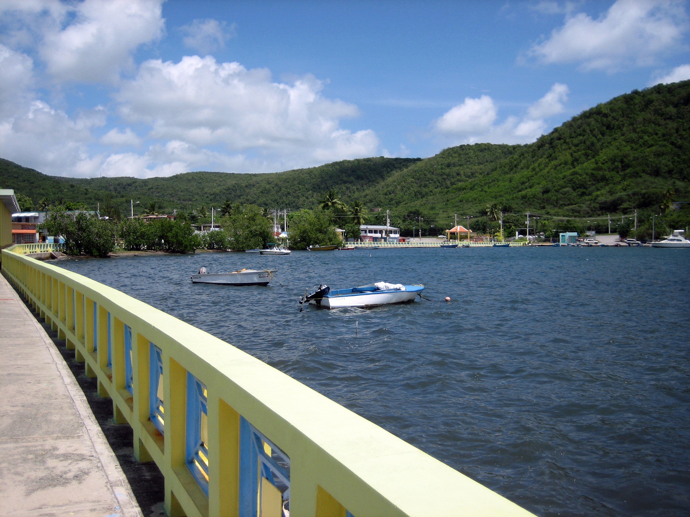
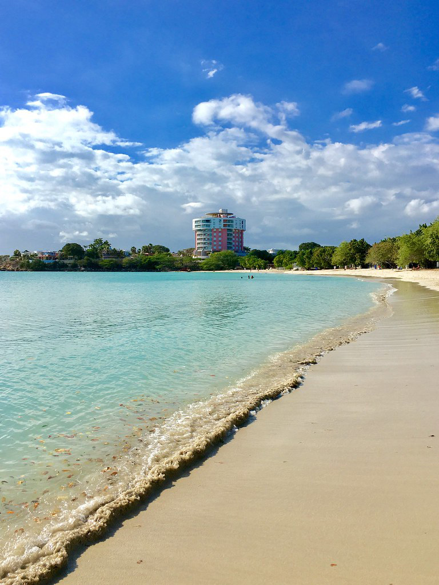
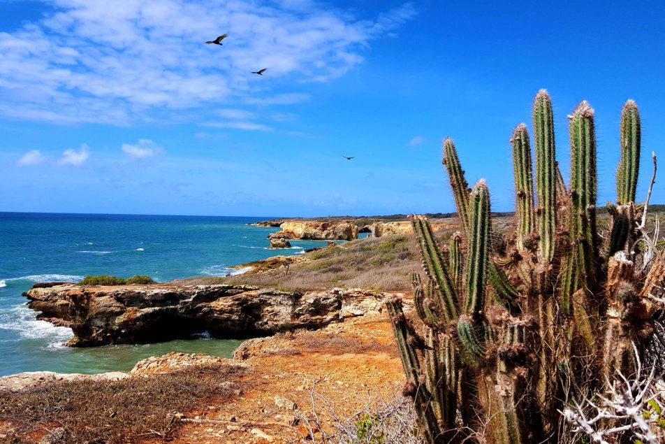

Fuerte Caprón
.jpg)
Ubicado al final de uno de los senderos más caminados en el Bosque Seco de Guánica, Fuerte Caprón tiene algunas de las vistas más pintorescas del bosque seco. Desde las ruinas del fuerte, podrá disfrutar de las impresionantes vistas de la Bahía de Guánica y el asombroso entorno natural de este bosque costero seco tropical.
Fuerte Caprón fue construido originalmente en el siglo XVI por los españoles y luego reutilizado por las tropas estadounidenses después de la guerra hispanoamericana.
-
Pueden visitar en:
- Dirección: Guánica 00653
Malecón de Guánica
El malecón de Guánica es un paisaje multicolor lleno de tiendas y restaurantes para el disfrute de todos.
-
Pueden visitar en:
- Dirección: X38V+26C, Av. Esperanza Idrach, Guánica, 00653
Playa Santa
Una de las playas más populares de Guánica, Playa Santa tiene una amplia costa de arena blanca cepillada por aguas cristalinas y bordeada por cocoteros. Es una bonita playa para relajarse y retirarse, y en su entrada encontrarás varios quioscos que ofrecen alquiler de kayaks y puestos de comida. No hay socorristas ni baños en el lugar.
-
Pueden visitar en:
- Dirección: Guánica 00647
Bosque Seco de Guánica
El Bosque Seco de Guánica, una Reserva Internacional de la Biosfera de las Naciones Unidas, es uno de los bosques costeros secos tropicales más extensos del mundo, con un total de alrededor de 9,000 acres de tierra.
-
Pueden visitar en:
- Dirección: X4CJ+HGV, Guánica 00653